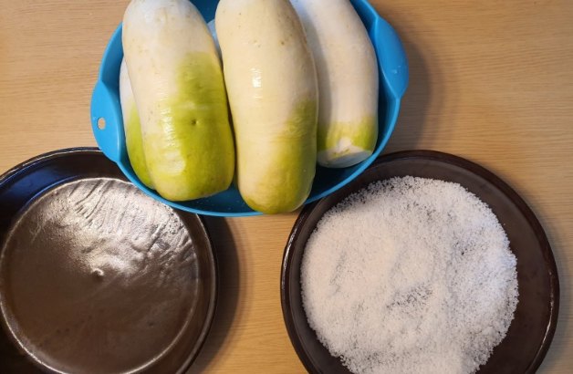
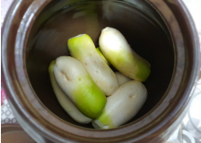
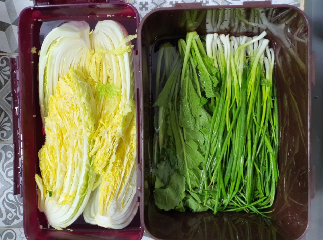
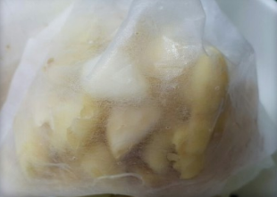
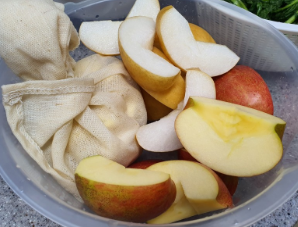
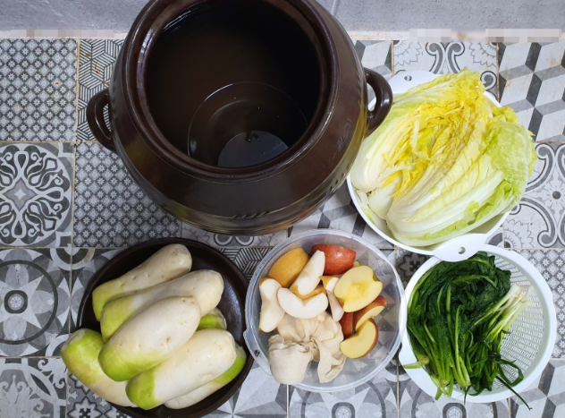
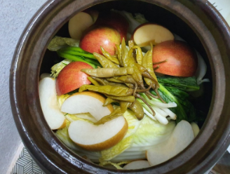
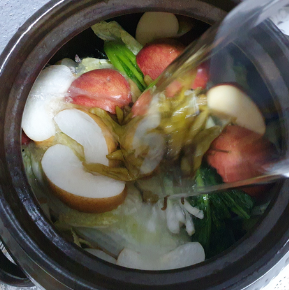
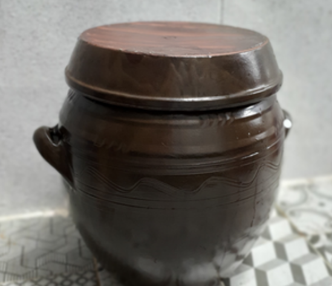
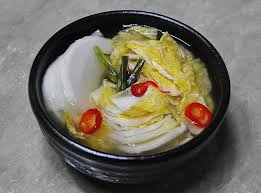

동치미
줄거리

스님을 기쁘게 해 준 고기 없는 동치미냉면의 동치미! 한 번 만들어 볼까요???
스님을 기쁘게 해 준 고기 없는 동치미냉면의 동치미! 한 번 만들어 볼까요???
재료
무 7~10개, 굵은 소금, 쪽파 한 줌, 청갓 한 줌, 마늘 3통, 생강 2톨,
사과 2개, 배 1개, 배추 1~2포기, 대파 뿌리 10대분, 삭힌 고추 10여개
(붉은 고추, 당근을 넣거나 색깔 내기 위해 비트도 있으면 좋다)
무 7~10개, 굵은 소금, 쪽파 한 줌, 청갓 한 줌, 마늘 3통, 생강 2톨,
사과 2개, 배 1개, 배추 1~2포기, 대파 뿌리 10대분, 삭힌 고추 10여개
(붉은 고추, 당근을 넣거나 색깔 내기 위해 비트도 있으면 좋다)
레시피
 1. 무를 깨끗하게 씻는다. 껍질은 깎지 않는다.
 2. 무에 소금옷을 입힌 후 항아리에 담아서 1~2일 정도 절인다.
 3. 배추, 쪽파, 청갓을 다듬어서 소금물에 30분 이상 절여 준다.
 4. 다듬어진 마늘, 생강, 대파 뿌리를 면 보자기에 넣고 묶어서 양념 주머니를 만들어 준다.
 5. 사과와 배를 4~8조각으로 적당하게 잘라준다. 씨도 제거한다.
 6. 이제 항아리에 재료를 담아 주기만 하면 된다!
 7. 맨 아래에 양념주머니를 넣어주고, 무 서너 개를 깔아 놓는다. 그 위에 배추, 쪽파, 갓을 반 정도씩 차곡차곡 눌러 담는다. 반복해서 재료를 모두 눌러 담아준다. 마지막으로 삭힌 고추를 얹는다.
 8. 물과 소금의 비율을 20대 1정도로 하여 만든 소금물을 부어 준다. 취향에 따라서 탄산수를 넣어도 좋다.
 9. 야외에서(ex. 베란다) 일주일 정도 숙성 기간을 거친다.
 *****완성*****